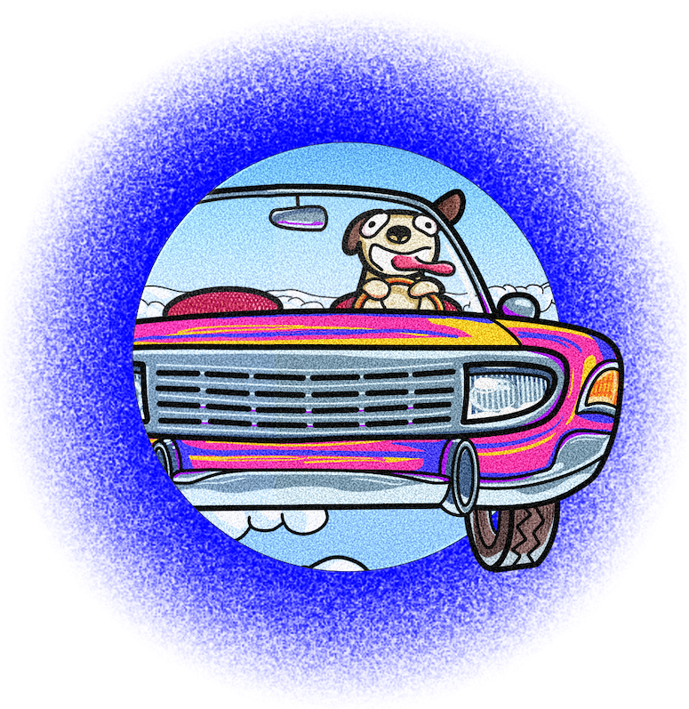

High Dog
With High Dog, I explored wild colours and a surreal scenario, pushing my imagination to the extreme. A dog soaring through the sky in a fancy, neon car is an invitation for us to embrace our imagination in a playful way. I used a bold, high contrast colour palette to make the piece feel alive, while using careful shading to add just enough realism for it to be believable.
Inspiration
It all started as I was looking back at my previous art pieces. I realised that I wanted to push my creativity in a direction that was more colourful, bold and full of energy. I was inspired to use my imagination to create something that felt spontaneous and playful.
Process
Using Procreate, I sketched out my initial idea, experimenting with different objects such as a basketball to convey the message of spontaneity and lightheartedness. Once the idea was clear, I followed up with the line art and colouring.
Since I seldom worked with wild, bright colours, one of the biggest challenges was ensuring that the vibrant colour palette enhanced the artwork rather than overwhelmed it. Through trial and error, I chose warm colours for the car to act as a good contrast to the blue sky. Specifically, bright pink and yellow were chosen to convey passion and an electric feel.
Lighting was also another key challenge. As the lighting for the piece is direct sunlight, I had to carefully consider how shadows would behave, since intense sunlight usually eliminates harsh shadows. By using softer, less-intense colours, I was able to create subtler shadows.
Results
I'm proud of this piece not only for its vibrant and energetic design, but also for the skills I developed along the way. Through this work, I learnt to use bright colours effectively and refined my shading technique. More importantly, it reminded me of the need for consistent practice to improve my art skills, encouraging me to always experiment and challenge myself creatively.
As a next step, I brought my artwork beyond the screen by using it to create my very first T-shirt design, bringing my vision into something tangible.